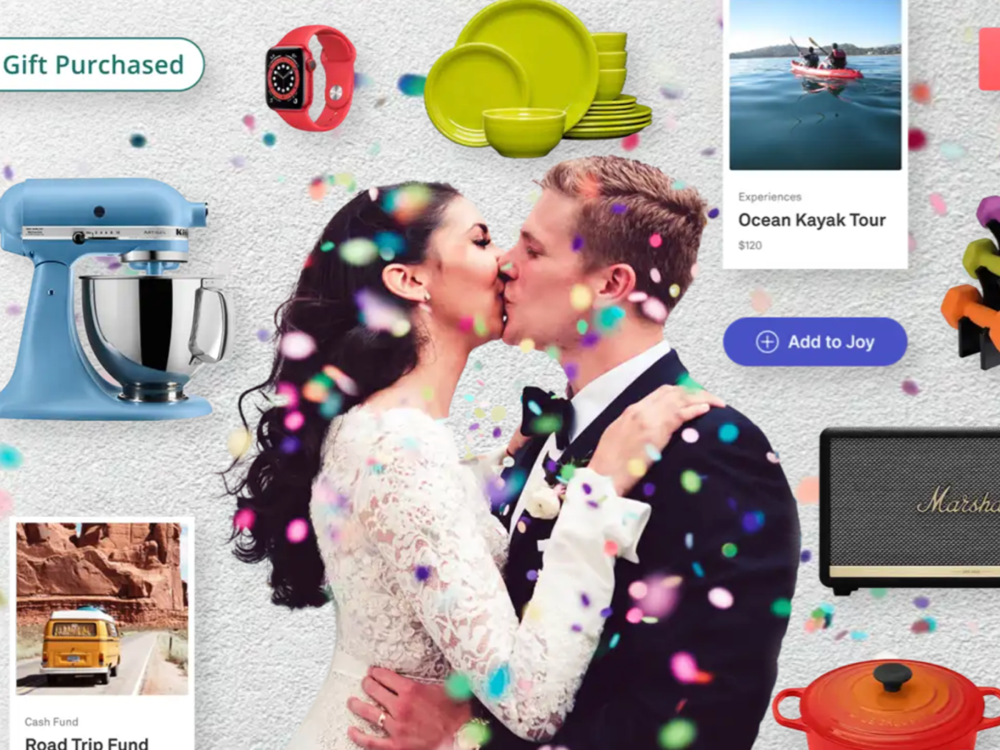
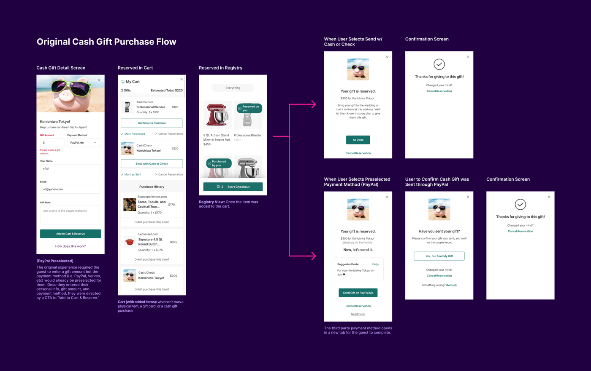
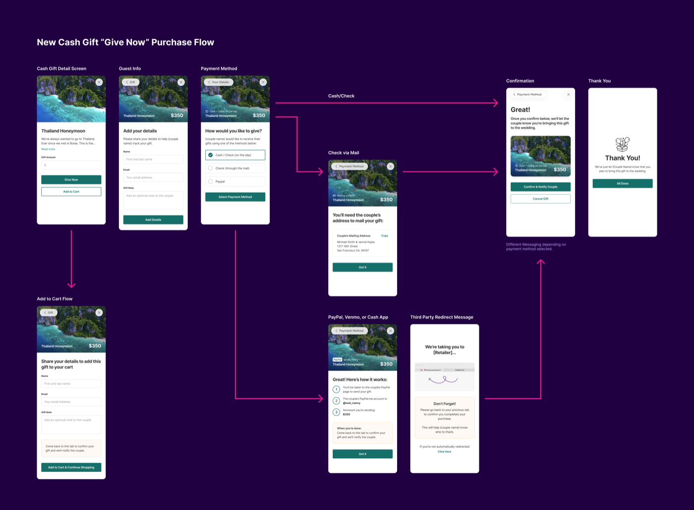

Cash Gift Purchases
ImpactCut purchase-confusion support tickets ~75% by rebuilding the cash-gift flow from a “reserve” model to a clear cart-and-purchase model.

Joy is a wedding website and registry platform. When I joined, I took ownership of a cash-gift purchasing flow that was creating confusion and friction on both sides: guests didn't realize they had to manually finish a purchase, and couples couldn't tell why gifts they'd been promised never arrived. Building on insights a previous designer had gathered, I drove the redesign end to end.
Feedback from Intercom and FullStory pointed to the same root issue: a "reserve" model that never resolved itself.
I moved the flow from a reserve model to a shopping-cart-and-purchase model: a gift wasn't marked as given to the couple until the guest actually completed and confirmed the purchase, closing the gap between "intent" and "done." I also broke the journey into focused steps (guest information became its own step rather than being bundled in) and removed payment pre-selection so guests could choose a method they already recognized.



Couples who had previously expressed frustration began reporting the opposite: a smoother, clearer experience for the guests giving them gifts, and more confidence that gifts they were promised would actually arrive.